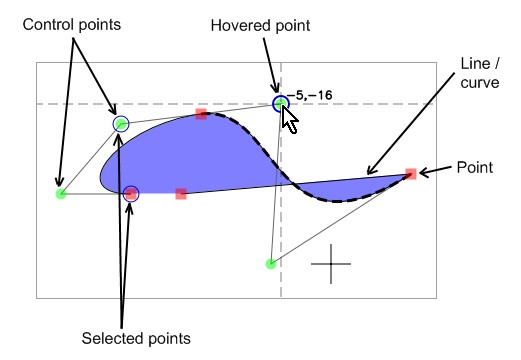

Shapes on canvas

Points refer to the endpoints of lines/curves. They are the connection points from one line or curve to another. On the canvas they appear as squares (red by default but colors can be changed in settings).
Control points are the internal points of Bezier curves. They control how the curves curve.
Hovered points and control points are circled and crossed, and their coordinates are displayed. Line or curve that the hovered point belongs to is also highlighted with dashed thicker line/curve.
Selected points and control points are, as the title denotes. Points are selected when left-clicked, and it is possible to select multiple points.
Other things worth knowing are:
This help file has been generated by the freeware version of HelpNDoc